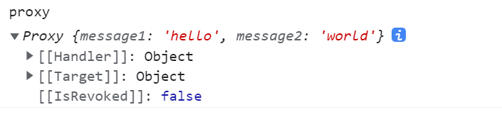
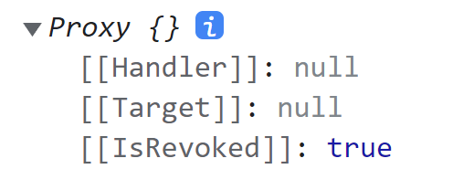

Proxy
定义
Proxy内置对象使您能为另一个对象创建一个代理（proxy），改代理能拦截（intercept）并重定义（redefine）对象的基本操作（fundamental operation）
理解Proxy
代理对象（proxy objects）
Proxy内置对象创建一个能代替（in place of）原始对象（original object）的对象
- 新创建的代理对象（proxy objects）能重新定义基本的对象操作（Object operation），例如getting、setting、defining properties
- 代理对象通常用于记录属性（log property）的访问（access）、验证（valdate）、格式化（format），或清楚输入（sanitize inputs）
通过Proxy 创建代理对象需要两个参数
target： 想要代理（proxy）的源对象
handler：一个对象，定义代理需要拦截（intercept）的一些操作以及重新定义（redefine）拦截下来的操作（intercepted operations）
空handler
handler对象可以为空，表示不进行拦截任何操作也不重新定义拦截下来的操作，如下const target = { message1: "hello", message2: "everyone", }; const proxy = new Proxy(target, {}); console.log(proxy); // { message1: 'hello', message2: 'everyone' } console.log(proxy.message1); // hello console.log(proxy.message2); // everyone proxy.message2 = "world"; console.log(target); // { message1: 'hello', message2: 'world' } console.log(target.message1); // hello console.log(target.message2); // world console.log(proxy === target); // false
- 因为handler为空，代理对象的行为和原始对象一模一样, 就好像代理对象
proxy就像一个新变量引用源对象
- 但实际上
proxy和target是两个完全不同的对象，它们指向不同的实际对象
实现handler.get()
handler.get()是拦截并重定义源对象获取属性操作的方法，它接收三个参数target源对象
prop访问属性的属性名称
receiver：proxy对象或继承proxy的一个对象
const handler2 = { get(t, prop, receiver) { console.log(t === target); console.log(prop); console.log(receiver); return "不管访问什么属性都被返回的值"; }, }; const proxy2 = new Proxy(target, handler2); console.log(proxy2); // { message1: 'hello', message2: 'world' } console.log(proxy2.message1); // true message1 { message1: 'hello', message2: 'world' } 不管访问什么属性都被返回的值 console.log(proxy2.message2); // true message2 { message1: 'hello', message2: 'world' } 不管访问什么属性都被返回的值
handler方法 有时又称为 陷阱(traps) ，很大程度上是因为handler方法它们像陷阱一样捕获对目标对象的调用;例如上述的例子就是最简单的陷阱（trap），它们捕获目标对象对属性的访问操作，并重定义所有属性访问器（property accessor）
配合Reflect
- 在
Reflect类的帮助下，能指定一些属性访问器仍然拥有源对象的行为（即正常访问），而重定义（redefine）其它的属性访问器const handler3 = { get(target, prop, receiver) { if (prop == "message1") { return "message1访问操作被拦截并重定义"; } return Reflect.get(...arguments); }, }; const proxy3 = new Proxy(target, handler3); console.log(proxy3); // { message1: 'hello', message2: 'world' } console.log(proxy3.message1); // message1访问操作被拦截并重定义 console.log(proxy3.message2); // world
可撤销的代理
Proxy.revocable()参数传递和Proxy()构造函数一样，唯一区别在于作为Proxy的静态方法，它能创建源对象的可撤销（revocable）的代理对象
- 代理默认是不可撤销的，使用[[IsRevoked]]特性保存一个布尔值表示代理是否可撤销
Proxy没有原型
Proxy是一个没有原型和prototype属性的构造函数
- 而
Proxy的实例也没有[[Prototype]]特性直接指向Object.prototype，因为Proxy构造函数的prototype属性为undefined
- 打印
Proxy实例对象 会发现它有三个显示出来的特性
{kind=link}
- [[Handler]] 特性，被赋值为创建时的传入的
handler对象
- [[Target]]特性，被赋值为创建时传入的源对象
- [[IsRevoked]]布尔值，表示代理是否可撤销，使用
Proxy.revocable()创建的代理就是可撤销的，可撤销代理的打印如下
Proxy.revocable(target, {})创建了一个对象，其有三个属性（两个自有属性，一个内置的[[Prototype]]属性）
- 其中两个自有属性分别为
proxy和revoke,proxy就是创建的代理，和之前的proxy的不同之处在于它有了一个与之对应的revoke方法
- 这个
revoke方法在调用后，就会撤销proxy与target的关系,可以多次调用revoke但是只有第一次有效
proxy再被撤销后就不能使用了，视图通过它访问之前关联的target会抛出错误，proxy打印图如下
{kind=link}
例子
无操作转发代理（no-op forwarding proxy）
- 无操作转发代理就是
handler为 空对象的代理，所有对代理的操作都直接转发到源对象上，相当于操作贯穿
- 这种无操作转发代理适用于JavaScript普通（plain）对象，但是不适合原生（native）对象
- 任何具有内部插槽（internal slot）的对象都不适合，例如DOM元素，Map对象
禁止私有属性转发（no private property forwarding）
- 代理本质上是另一个具有不同标识（identity）的对象— 它是一个在被包装对象和包装对象外部进行操作的一个对象
- 因此，代理不能直接访问源对象的私有属性
var crypto = require("crypto"); // 加密方法 getEncAse192 = function (str, secret) { var cipher = crypto.createCipher("aes192", secret); //设置加密类型 和 要使用的加密密钥 var enc = cipher.update(str, "utf8", "hex"); //编码方式从utf-8转为hex; enc += cipher.final("hex"); //编码方式从转为hex; return enc; //返回加密后的字符串 }; // 无操作转发，不能转发私有属性 class Secret { #secret; constructor(secret) { this.#secret = secret; } get secret() { return getEncAse192(this.#secret, "kkk"); } } const aSecret = new Secret("Secret"); console.log(aSecret.secret); // a74db70f9f4f9cbff6472b5377f230f4 // 声明代理 const proxyS = new Proxy(aSecret, {}); try { console.log(proxyS.secret); // TypeError: Cannot read private member #secret from an object whose class did not declare it } catch (error) { console.log(error.toString()); }
- 具体不能访问到
#secret私有属性的原因是:当使用代理访问secret时，源对象的get方法被代理的get陷阱(trap)拦截并调用代理的get，而带来的get中的this指针指向的是代理，而不是源对象，#secret只能被源对象内部访问器访问到，所以无操作转发代理就无法访问到源对象的私有属性
解决方案
- 重定义
get访问而不是简单的转发，如下const proxyS2 = new Proxy(aSecret, { get(target, prop, receiver) { return target[prop]; }, }); console.log(proxyS2.secret); // a74db70f9f4f9cbff6472b5377f230f4